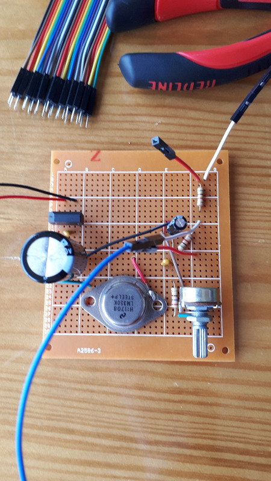
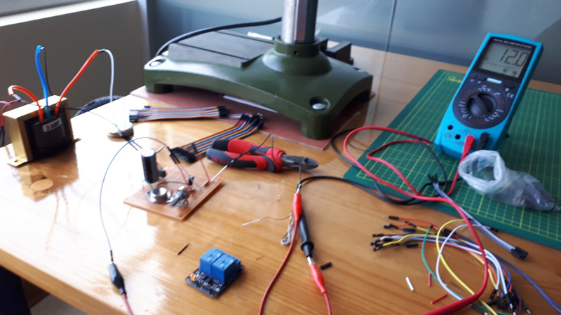
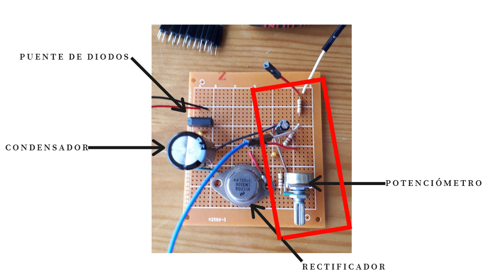

FABRICACIÓN DEL MÓDULO PRINCIPAL
DESARROLLO DE LOS SISTEMAS DE CIRCUITOS DEL PROTOTIPO
Se presentará la parte electrónica interna del prototipo a desarrollar, asimismo, un pequeño informe de cada circuito, errores que tuvimos en dicho momento e ideas para continuar con el mejoramiento y perfeccionamiento del prototipo.
SISTEMA DE CIRCUITOS DE LA MICROBOMBA
Se desarrolló primero el circuito de la microbomba para su activación, a continuación se mostrarán imagenes con el circuito finalizado:
  El circuito mostrado transforma la corriente alterna que se envía de la fuente a corriente continua. Tanto el potenciómetro como los condensadores y las resistencias dentro del rectángulo rojo interno de la imagen anterior, controlan el voltaje que se necesitará para la activación de la microbomba, el cual requerirá 24 V de voltaje. En el momento de hacer la prueba con la microbomba y en el músculo de Mckibben desarrollado, la contracción que se dio no era la esperada, fue de solo algunos milímetros de contracción. Consultamos con nuestro asesor sobre qué solución se podría dar a ello, y la opción más accesible dentro del laboratorio fue cambiar de microbomba.